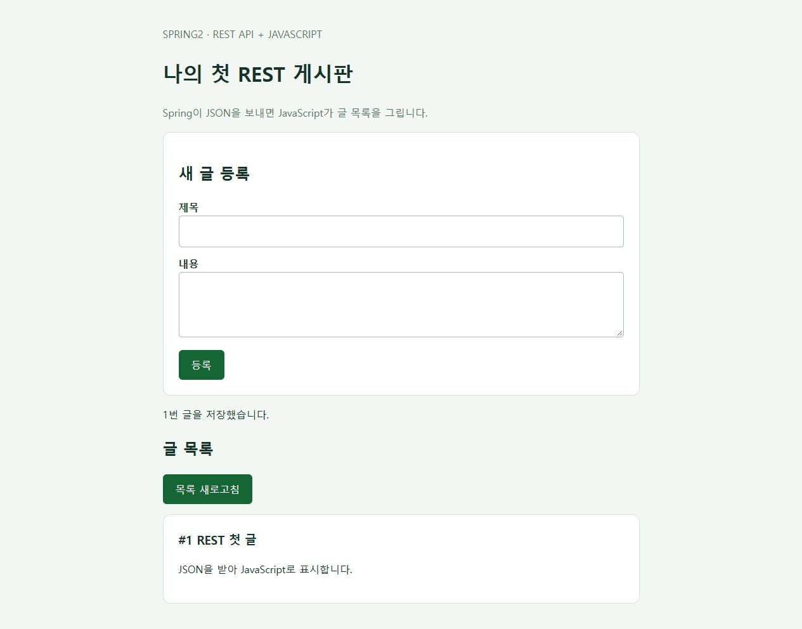

01. 이번에는 REST API + JavaScript 게시판입니다
Spring Boot는 게시글 데이터를 JSON으로 반환하고, 브라우저의 JavaScript가 그 데이터를 받아 화면을 만듭니다. 프런트엔드는 순수 JavaScript로 먼저 실습합니다. React와 Vue도 같은 REST API를 호출할 수 있으므로, 이후 화면 기술만 바꿀 수 있습니다.
브라우저의 HTML + JavaScript
│ fetch()로 GET / POST 요청
▼
Spring REST API → JPA → H2 데이터베이스
│ JSON 응답
▼
JavaScript가 글 목록과 등록 결과를 화면에 표시
이번 글의 도착점: 글 등록, 목록 조회, 상세 조회 API를 만들고 실제 DB에 저장된 글을 JavaScript 화면에서 확인합니다. 수정·삭제·회원 인증은 다음 단계입니다.
| 역할 | 이번 실습 | 나중에 바꿀 수 있는 부분 |
|---|---|---|
| 백엔드 | Spring Boot + Spring Web + JPA + H2 | MySQL/PostgreSQL, 인증, 서비스 계층 추가 |
| API 형식 | /api/posts에서 JSON 요청·응답 |
React/Vue에서도 같은 주소·형식을 사용 |
| 프런트엔드 | HTML + CSS + JavaScript의 fetch() |
React 컴포넌트 또는 Vue 컴포넌트로 전환 |
- 준비물: JDK 21, VS Code, 인터넷 연결. 이 순수 JavaScript 예제에는 Node.js 설치가 필요하지 않습니다.
- Maven은 생성된 프로젝트의 Maven Wrapper로 실행합니다.
- 첫 실습에서는 Spring Boot가
static/의 HTML·JS 파일도 제공하므로 한 서버만 실행합니다. 게시글 화면은 브라우저에서 JSON을 읽어 구성합니다. spring2는 블로그 폴더 이름이며 Spring Boot 2를 뜻하지 않습니다.
완성된 실습 프로젝트 ZIP 다운로드 · 압축을 풀고 board/pom.xml이 있는 폴더를 VS Code에서 열면 됩니다. 아래 코드를 직접 입력해도 같은 결과를 얻습니다.
이전 가이드를 따라 만들었다면
pom.xml에서 spring-boot-starter-thymeleaf와 spring-boot-starter-thymeleaf-test 의존성을 제거합니다. 이전 실습의 HomeController.java와 templates/index.html도 제거한 뒤 아래 REST 컨트롤러와 static/index.html, static/app.js로 바꿉니다. 기존 / 컨트롤러가 남아 있으면 새 정적 첫 화면과 충돌할 수 있습니다.
02. 프로젝트 기본값 입력하기
Spring Initializr 열기 → 왼쪽 항목을 아래 표와 같이 선택합니다. 화면의 초록색 표시가 선택된 값입니다.
| 항목 | 선택 / 입력값 | 선택 이유 |
|---|---|---|
| Project | Maven | pom.xml에서 의존성을 확인하고 Wrapper로 실행합니다. |
| Language | Java | 이번 게시판 예제의 개발 언어입니다. |
| Spring Boot | 4.1.2 | 캡처 시점에 제공되는 정식 버전입니다. |
| Group | com.example |
연습용 패키지의 상위 이름입니다. |
| Artifact | board |
프로젝트와 내려받는 ZIP의 이름입니다. |
| Package name | com.example.board |
자바 소스의 기본 패키지입니다. Artifact 입력 후 확인합니다. |
| Packaging | Jar | 내장 서버를 포함해 단독으로 실행합니다. |
| Configuration | Properties | 이 글의 application.properties 예제와 맞춥니다. |
| Java | 21 | 프로젝트에서 사용할 Java 버전입니다. VS Code의 프로젝트 JDK도 맞춥니다. |

SNAPSHOT은 개발 중인 빌드이고 RC는 정식 출시 전 후보 버전입니다. 처음 따라 할 때는 숫자만 표시된 정식 버전을 선택합니다. 버전 목록은 바뀔 수 있으므로 나중에 4.1.2가 보이지 않으면 제공되는 정식 버전과 Java 호환성을 다시 확인하세요. 공식 시스템 요구사항
03. 게시판에 필요한 의존성 5개 추가하기
오른쪽 ADD … 버튼을 누르고 이름을 검색한 다음 결과를 클릭합니다. 이 과정을 아래 5개 항목에 반복합니다. Windows에서는 Ctrl + B로 검색창을 열 수 있습니다.

| 검색어 / 선택할 이름 | 게시판에서 맡는 역할 | 이번 구성 |
|---|---|---|
| Spring Web | 요청을 컨트롤러로 받고 내장 Tomcat 서버를 실행합니다. | 필수 |
| Spring Data JPA | 게시글 객체를 데이터베이스에 저장하고 조회합니다. | 필수 |
| H2 Database | 별도 설치 없이 로컬 실습용 DB를 사용합니다. | 필수 |
| Validation | 제목 필수 입력, 글 길이 같은 입력값을 검증할 때 사용합니다. | 추가 |
| Spring Boot DevTools | 개발 중 변경 사항을 반영할 때 재시작을 도와줍니다. | 개발 편의 |
Spring Web은 Spring Reactive Web과 다른 항목입니다. 이번 REST API도 Spring MVC 기반의 Spring Web을 사용합니다. Thymeleaf는 추가하지 않습니다. Lombok은 이 예제에 필요하지 않습니다. 로그인·권한 기능을 구현할 때는 Spring Security를 별도 단계에서 설정합니다.
04. 생성 파일 확인하고 ZIP 다운로드하기
- EXPLORE를 누르면 생성될 프로젝트 파일을 미리 볼 수 있습니다.
pom.xml에서 Spring Boot 버전4.1.2와<java.version>21</java.version>을 확인합니다.- CLOSE로 돌아온 뒤 GENERATE를 누릅니다. 미리보기 하단의 DOWNLOAD로도 ZIP을 받을 수 있습니다.
- 내려받은
board.zip을 압축 해제합니다.pom.xml이 들어 있는 폴더가 프로젝트 루트입니다.

Spring Boot 4.1.2에서 이번 설정으로 생성되는 주요 의존성은 다음과 같습니다. Initializr가 만든 pom.xml을 그대로 사용하면 됩니다.
spring-boot-starter-webmvc
spring-boot-starter-data-jpa
spring-boot-starter-validation
spring-boot-devtools
com.h2database:h2
spring-boot-h2console
spring-boot-h2console은 이 버전에서 H2 Database를 선택할 때 함께 생성됩니다. 테스트용 의존성도 추가되므로 pom.xml의 dependency 개수가 화면에서 고른 5개보다 많아도 정상입니다. 0.0.1-SNAPSHOT은 내 게시판 프로젝트 버전으로, 위에서 피한 Spring Boot의 SNAPSHOT 버전과 구분합니다.
05. VS Code에서 프로젝트 열기
① Java·Spring 확장 설치
VS Code를 실행하고 왼쪽 Extensions(확장) 아이콘 또는 Windows의 Ctrl + Shift + X를 눌러 다음 두 확장 묶음을 검색해 설치합니다.
| 확장 이름 | 용도 |
|---|---|
| Extension Pack for Java | Java 코드 자동 완성, Maven 프로젝트 인식, 실행·디버깅·테스트 도구를 제공합니다. |
| Spring Boot Extension Pack | Spring 설정 지원과 Spring Boot Dashboard를 제공합니다. |
VS Code 공식 Spring Boot 가이드에서 두 확장 묶음을 확인할 수 있습니다. 이 글에서는 앞서 Spring Initializr 웹사이트에서 받은 ZIP을 사용합니다.
② 압축 해제한 board 폴더 열기
- File → Open Folder…(파일 → 폴더 열기)에서
pom.xml이 들어 있는 폴더를 선택합니다. - 왼쪽 Explorer(탐색기)에
pom.xml,mvnw.cmd,src가 함께 보이는지 확인합니다.src만 열면 프로젝트 루트로 다시 엽니다. - Java 확장이 Maven 프로젝트를 가져오고 의존성을 내려받을 때까지 기다립니다. Java Projects 뷰에서 프로젝트를 확인할 수 있습니다.
src/main/java/com/example/board/BoardApplication.java를 열어main메서드를 확인합니다.
③ 프로젝트 JDK와 터미널 Java 확인
Ctrl + Shift + P로 명령 팔레트를 열고 Java: Configure Java Runtime을 실행합니다.- 프로젝트의 Java 런타임 정보를 확인하고 JDK 21 설치 경로를 등록합니다. JDK가 없다면 Java: Install New JDK에서 21을 선택해 설치할 수 있습니다.
- Maven 프로젝트의 Java 버전은
pom.xml의<java.version>21</java.version>로 유지합니다. 런타임 설정의 기본값만 바꿔서는 Maven의 빌드 버전이 바뀌지 않습니다. - Terminal → New Terminal(터미널 → 새 터미널)에서 PowerShell을 열고 아래 명령을 실행합니다.
java -version
javac -version
.\mvnw.cmd -v
세 출력에서 Java 21 사용 여부를 확인합니다. mvnw.cmd -v는 실제 Maven이 사용하는 Java 경로도 보여 줍니다. 다른 버전이 나온다면 Windows의 JAVA_HOME을 설치한 JDK 21 폴더로, Path의 Java 경로를 해당 JDK의 bin으로 맞춘 뒤 VS Code를 완전히 종료하고 다시 열어 확인합니다. 확장의 Java 런타임 선택과 터미널의 JAVA_HOME은 따로 확인해야 합니다.
VS Code의 Java 상태가 Lightweight이면 상태 표시줄에서 Standard 모드로 전환하고 프로젝트 로딩을 완료합니다. 실행·디버깅에는 의존성을 해석하는 Standard 모드가 필요합니다. 프로젝트 가져오기와 JDK 설정 공식 안내
④ 파일 위치 확인
VS Code 탐색기에서 아래 완성 구조를 기준으로 파일을 추가합니다. 다음 단계부터 이 탐색기에서 설정과 예제 파일을 추가하면 됩니다.
board/ ← pom.xml이 있는 폴더
├─ pom.xml ← 의존성 / Java / Boot 버전
├─ mvnw, mvnw.cmd, .mvn/ ← Maven Wrapper
└─ src/
├─ main/
│ ├─ java/com/example/board/
│ │ ├─ BoardApplication.java
│ │ ├─ Post.java
│ │ ├─ PostRepository.java
│ │ └─ PostController.java
│ └─ resources/
│ ├─ application.properties
│ └─ static/
│ ├─ index.html ← 화면 구조
│ └─ app.js ← JSON 요청과 화면 구성
└─ test/ ← 생성된 테스트
06. 로컬 H2 DB 설정하기
VS Code에서 src/main/resources/application.properties에 다음을 저장합니다.
spring.application.name=board
server.address=127.0.0.1
server.port=8080
spring.datasource.url=jdbc:h2:mem:boarddb
spring.datasource.driver-class-name=org.h2.Driver
spring.datasource.username=sa
spring.datasource.password=
spring.jpa.hibernate.ddl-auto=update
spring.jpa.show-sql=true
spring.jpa.properties.hibernate.format_sql=true
spring.jpa.open-in-view=false
spring.h2.console.enabled=true
spring.h2.console.path=/h2-console
spring.h2.console.settings.web-allow-others=false
jdbc:h2:mem:boarddb는 메모리 DB입니다. 브라우저 새로고침은 데이터를 유지하지만 서버 프로세스를 종료하면 데이터가 사라집니다.ddl-auto=update는 로컬 실습용입니다. 실제 운영 DB는 별도 마이그레이션 방식으로 관리합니다.server.address=127.0.0.1은 내 PC에서만 접근하도록 제한합니다. H2 콘솔도 로컬 실습용으로 사용합니다.
07. JSON을 반환하는 게시판 API 만들기
VS Code 탐색기에서 다음 세 파일을 src/main/java/com/example/board/ 아래에 추가합니다. 생성된 BoardApplication.java는 유지합니다.
| 요청 | 동작 | 정상 응답 |
|---|---|---|
GET /api/posts |
최신 ID 순으로 목록 조회 | 200 OK, JSON 배열 |
GET /api/posts/{id} |
글 하나 조회 | 200 OK, JSON 객체. 없는 ID는 404 |
POST /api/posts |
JSON으로 받은 글 저장 | 201 Created, 저장한 JSON 객체와 Location 헤더 |
① Post.java — DB에 저장할 Entity
package com.example.board;
import jakarta.persistence.Column;
import jakarta.persistence.Entity;
import jakarta.persistence.GeneratedValue;
import jakarta.persistence.GenerationType;
import jakarta.persistence.Id;
import jakarta.persistence.Table;
@Entity
@Table(name = "posts")
public class Post {
@Id
@GeneratedValue(strategy = GenerationType.IDENTITY)
private Long id;
@Column(nullable = false, length = 100)
private String title;
@Column(nullable = false, length = 5000)
private String content;
protected Post() {}
public Post(String title, String content) {
this.title = title;
this.content = content;
}
public Long getId() { return id; }
public String getTitle() { return title; }
public String getContent() { return content; }
}
② PostRepository.java — 저장·조회
package com.example.board;
import org.springframework.data.jpa.repository.JpaRepository;
public interface PostRepository extends JpaRepository<Post, Long> {}
③ PostController.java — 요청과 JSON 응답
package com.example.board;
import java.net.URI;
import java.util.List;
import java.util.Map;
import jakarta.validation.Valid;
import jakarta.validation.constraints.NotBlank;
import jakarta.validation.constraints.Size;
import org.springframework.data.domain.Sort;
import org.springframework.http.HttpStatus;
import org.springframework.http.ResponseEntity;
import org.springframework.web.bind.MethodArgumentNotValidException;
import org.springframework.web.bind.annotation.ExceptionHandler;
import org.springframework.web.bind.annotation.GetMapping;
import org.springframework.web.bind.annotation.PathVariable;
import org.springframework.web.bind.annotation.PostMapping;
import org.springframework.web.bind.annotation.RequestBody;
import org.springframework.web.bind.annotation.RequestMapping;
import org.springframework.web.bind.annotation.RestController;
import org.springframework.web.server.ResponseStatusException;
@RestController
@RequestMapping("/api/posts")
public class PostController {
private final PostRepository repository;
public PostController(PostRepository repository) {
this.repository = repository;
}
public record CreatePostRequest(
@NotBlank @Size(max = 100) String title,
@NotBlank @Size(max = 5000) String content
) {}
public record PostResponse(Long id, String title, String content) {
static PostResponse from(Post post) {
return new PostResponse(post.getId(), post.getTitle(), post.getContent());
}
}
@GetMapping
public List<PostResponse> list() {
return repository.findAll(Sort.by(Sort.Direction.DESC, "id"))
.stream().map(PostResponse::from).toList();
}
@GetMapping("/{id}")
public PostResponse detail(@PathVariable Long id) {
Post post = repository.findById(id)
.orElseThrow(() -> new ResponseStatusException(HttpStatus.NOT_FOUND));
return PostResponse.from(post);
}
@PostMapping
public ResponseEntity<PostResponse> create(@Valid @RequestBody CreatePostRequest request) {
Post saved = repository.save(new Post(request.title().trim(), request.content().trim()));
return ResponseEntity.created(URI.create("/api/posts/" + saved.getId()))
.body(PostResponse.from(saved));
}
@ExceptionHandler(MethodArgumentNotValidException.class)
public ResponseEntity<Map<String, String>> invalidInput() {
return ResponseEntity.badRequest().body(Map.of(
"message", "제목은 1~100자, 내용은 1~5000자로 입력하세요. 공백만 입력할 수 없습니다."));
}
}
@RestController는 반환한 DTO를 응답 본문으로 보내고, Spring Web의 JSON 변환기가 객체·목록을 JSON으로 직렬화합니다. @RequestBody는 요청 JSON을 Java 객체로 읽습니다. @Valid는 제목·내용을 검증하고, 잘못된 입력에는 400 Bad Request를 반환합니다. 응답 본문 공식 설명 · 요청 본문·검증 공식 설명
PostResponse는 외부에 보낼 필드만 정한 DTO입니다. 이 입문 예제는 컨트롤러에서 Repository를 직접 호출합니다. 여러 저장 작업을 묶거나 업무 규칙이 생기면 Service와 트랜잭션으로 분리합니다.
08. JavaScript로 화면 구성하기
다음 두 파일은 src/main/resources/static/에 만듭니다. templates/에 넣지 않습니다. Spring Boot가 파일을 전달하면, 브라우저에서 app.js가 실행되어 API를 호출합니다.
① static/index.html — 글 입력 폼과 목록 자리
<!DOCTYPE html>
<html lang="ko">
<head>
<meta charset="UTF-8">
<meta name="viewport" content="width=device-width, initial-scale=1">
<title>Spring REST 게시판</title>
<style>
* { box-sizing: border-box; }
body { margin: 0; background: #f3f7f4; color: #183329; font: 16px/1.7 system-ui, sans-serif; }
main { max-width: 800px; margin: 40px auto; padding: 0 24px; }
header p { color: #567363; }
form, li { background: white; padding: 24px; border: 1px solid #d7e4db; border-radius: 12px; }
label { display: block; margin-top: 12px; font-weight: bold; }
input, textarea { width: 100%; padding: 10px; font: inherit; border: 1px solid #a7beb0; border-radius: 5px; }
button { padding: 10px 20px; font: inherit; color: white; background: #166534; border: 0; border-radius: 6px; cursor: pointer; }
button:disabled { opacity: .6; cursor: wait; }
form button { margin-top: 12px; }
ul { padding: 0; list-style: none; }
li { margin-bottom: 12px; }
li h3 { margin: 0; }
li p { white-space: pre-wrap; overflow-wrap: anywhere; }
#status { min-height: 1.7em; }
</style>
<script src="/app.js" defer></script>
</head>
<body>
<main>
<header><p>SPRING2 · REST API + JAVASCRIPT</p><h1>나의 첫 REST 게시판</h1>
<p>Spring이 JSON을 보내면 JavaScript가 글 목록을 그립니다.</p></header>
<form id="post-form">
<h2>새 글 등록</h2>
<label for="title">제목</label><input id="title" name="title" required maxlength="100">
<label for="content">내용</label><textarea id="content" name="content" required maxlength="5000" rows="3"></textarea>
<button id="submit-button" type="submit">등록</button>
</form>
<p id="status" role="status" aria-live="polite"></p>
<h2>글 목록</h2><button id="refresh-button" type="button">목록 새로고침</button>
<ul id="posts"></ul>
</main>
</body>
</html>
② static/app.js — fetch()로 JSON 주고받기
const API_URL = '/api/posts';
const form = document.querySelector('#post-form');
const posts = document.querySelector('#posts');
const status = document.querySelector('#status');
const submitButton = document.querySelector('#submit-button');
async function request(url, options = {}) {
const response = await fetch(url, {
...options,
headers: { Accept: 'application/json', ...options.headers }
});
if (!response.ok) {
const error = await response.json().catch(() => ({}));
throw new Error(error.message || `요청 실패: HTTP ${response.status}`);
}
return response.json();
}
async function loadPosts() {
const data = await request(API_URL);
posts.replaceChildren();
if (data.length === 0) {
const empty = document.createElement('li');
empty.textContent = '아직 등록된 글이 없습니다.';
posts.append(empty);
return;
}
for (const post of data) {
const item = document.createElement('li');
const title = document.createElement('h3');
const content = document.createElement('p');
title.textContent = `#${post.id} ${post.title}`;
content.textContent = post.content;
item.append(title, content);
posts.append(item);
}
}
form.addEventListener('submit', async (event) => {
event.preventDefault();
submitButton.disabled = true;
status.textContent = '저장 중...';
try {
const saved = await request(API_URL, {
method: 'POST',
headers: { 'Content-Type': 'application/json' },
body: JSON.stringify({
title: form.elements.namedItem('title').value.trim(),
content: form.elements.namedItem('content').value.trim()
})
});
form.reset();
status.textContent = `${saved.id}번 글을 저장했습니다.`;
await loadPosts();
} catch (error) {
status.textContent = error.message;
} finally {
submitButton.disabled = false;
}
});
document.querySelector('#refresh-button').addEventListener('click', () => {
status.textContent = '';
loadPosts().catch(error => { status.textContent = error.message; });
});
loadPosts().catch(error => { status.textContent = error.message; });
fetch() → response.json() → 화면 요소 생성 순서입니다. 글 등록에는 POST, Content-Type: application/json, JSON.stringify()를 사용합니다. HTTP 오류도 확인하도록 response.ok를 검사합니다. 입력 내용은 textContent로 표시하므로 HTML 태그가 실행되지 않습니다. MDN Fetch 사용법
브라우저가 새로고침될 때도 목록을 다시 조회하므로, 화면의 내용은 서버 DB에서 가져옵니다. 별도의 프런트엔드 서버를 쓰지 않는 이번 구성에서는 상대 경로 /api/posts가 같은 출처를 가리켜 CORS 설정이 필요하지 않습니다.
09. VS Code에서 실행하고 요청·응답 확인하기
① 서버 실행
Terminal → New Terminal을 열고 pom.xml이 있는 폴더에서 실행합니다. 이미 켜 둔 서버가 있으면 중복 실행하지 않도록 확인합니다.
Windows PowerShell
.\mvnw.cmd -v
.\mvnw.cmd test
.\mvnw.cmd spring-boot:run
macOS / Linux
chmod +x mvnw
./mvnw -v
./mvnw test
./mvnw spring-boot:run
VS Code에서 BoardApplication.java의 main 위 Run / Debug 또는 F5, Spring Boot Dashboard로 실행해도 됩니다. 터미널 실행은 Ctrl + C, 디버깅 실행은 Stop 버튼으로 종료합니다.
② 빈 목록 → 글 등록 → 목록 조회
- 서버 시작 로그를 확인한 뒤 http://localhost:8080/api/posts를 엽니다. 처음에는 JSON 배열
[]가 나옵니다. - http://localhost:8080을 열어 제목과 내용을 입력하고 등록을 누릅니다.
- 글 목록에 입력한 내용이 나타나는지 확인합니다. 페이지를 새로고침해도 같은 글이 나와야 합니다.
/api/posts를 다시 열면 저장된 글의 JSON 배열이 표시됩니다.- 실제 응답의 ID로
/api/posts/1처럼 상세 API에 접속합니다. 존재하지 않는 ID는404입니다.
예를 들어 처음 저장한 글은 다음 형태로 반환됩니다. ID는 실행 상태에 따라 달라질 수 있습니다.
[
{
"id": 1,
"title": "REST 첫 글",
"content": "JSON을 받아 JavaScript로 표시합니다."
}
]

③ 브라우저 개발자 도구에서 JSON 확인
F12 → Network를 연 뒤 글을 등록하고 posts 요청을 선택합니다. 요청 Method가 POST, Payload가 JSON, 응답 Status가 201인지 확인합니다. 이어서 발생하는 GET /api/posts의 Response에는 글 목록 배열이 있어야 합니다. 화면용 HTML과 게시글 JSON 요청을 여기서 구분할 수 있습니다.
PowerShell에서 API만 확인하려면 서버 실행 터미널은 그대로 두고 새 터미널에서 실행합니다.
$body = @{ title = 'REST 첫 글'; content = 'JSON으로 저장한 글입니다.' } | ConvertTo-Json
Invoke-RestMethod -Uri 'http://localhost:8080/api/posts' -Method Post -ContentType 'application/json; charset=utf-8' -Body ([System.Text.Encoding]::UTF8.GetBytes($body))
Invoke-RestMethod -Uri 'http://localhost:8080/api/posts' | ConvertTo-Json
④ H2에서 실제 저장 확인
서버가 실행 중일 때 http://localhost:8080/h2-console을 엽니다. Driver Class는 org.h2.Driver, JDBC URL은 jdbc:h2:mem:boarddb, User Name은 sa, Password는 빈칸으로 연결합니다.
SELECT * FROM posts ORDER BY id DESC;
화면에서 등록한 글이 DB에서도 조회되면 연결이 완료된 것입니다.
10. React / Vue로 화면을 분리할 때
API의 URL·요청 JSON·응답 JSON은 그대로 사용합니다. 바뀌는 부분은 브라우저 화면의 구현입니다.
| 프런트엔드 | 목록 조회 결과 처리 | 글 등록 |
|---|---|---|
| 순수 JavaScript — 이번 실습 | fetch() 결과로 DOM 요소 생성 |
폼 이벤트에서 JSON POST |
| React | 컴포넌트에서 API를 호출하고 state에 저장해 목록 렌더링 | submit 이벤트에서 같은 JSON POST |
| Vue | API 결과를 ref/reactive 상태에 넣고 v-for로 표시 |
submit 이벤트에서 같은 JSON POST |
React/Vue 개발 서버를 별도로 실행하는 단계에서는 해당 도구가 요구하는 Node.js와 프런트엔드 프로젝트를 준비합니다. 예를 들어 화면 주소가 http://localhost:5173, API 서버가 http://localhost:8080이면 포트가 달라서 출처(origin)가 다릅니다.
- 프런트엔드의 API 주소를
http://localhost:8080/api/posts로 지정합니다. 상대 경로/api/posts는 프런트엔드 서버로 가므로, 개발 프록시를 설정하지 않았다면 잘못된 서버를 호출합니다. - 아래
WebConfig.java를com.example.board패키지에 추가하고 백엔드를 재시작합니다. 이 파일은 프런트엔드 서버를 분리할 때만 추가합니다. - 브라우저 주소가
http://127.0.0.1:5173이거나 다른 포트라면 실제 출처에 맞춰allowedOrigins를 수정합니다.
package com.example.board;
import org.springframework.context.annotation.Configuration;
import org.springframework.web.servlet.config.annotation.CorsRegistry;
import org.springframework.web.servlet.config.annotation.WebMvcConfigurer;
@Configuration
public class WebConfig implements WebMvcConfigurer {
@Override
public void addCorsMappings(CorsRegistry registry) {
registry.addMapping("/api/**")
.allowedOrigins("http://localhost:5173")
.allowedMethods("GET", "POST")
.allowedHeaders("Content-Type", "Accept");
}
}
이 설정은 /api/**에 대해 지정한 개발 출처의 GET·POST를 허용합니다. JSON POST의 사전 요청(preflight)은 Spring의 CORS 처리기가 응답합니다. 이번 예제에는 쿠키 인증이 없으며 CORS는 로그인·권한 검사를 대신하지 않습니다. Spring CORS 공식 가이드
배포 시: GitHub Pages에는 빌드한 프런트엔드 정적 파일을 올릴 수 있지만 Spring Boot 프로세스와 DB는 실행되지 않습니다. 백엔드를 별도 HTTPS 서버에 배포하고, 프런트엔드 API 주소와 허용 출처를 실제 도메인에 맞춥니다. 방문자의 localhost는 방문자 자신의 PC이므로 배포된 화면의 API 주소로 사용하지 않습니다.
11. 자주 막히는 지점과 다음 단계
| 증상 | 확인할 내용 |
|---|---|
/에서 404 또는 예전 화면 |
새 파일이 static/index.html인지 확인하고 이전 HomeController와 templates/index.html을 제거합니다. |
| API에서 HTML이 와서 JSON 파싱 실패 | /api/posts 주소와 서버 포트를 확인합니다. 별도 프런트엔드 서버의 HTML fallback을 받은 것은 아닌지 Network에서 봅니다. |
400 Bad Request |
제목·내용이 비어 있거나 길이 제한을 넘는지, 요청 JSON 필드가 title, content인지 확인합니다. |
415 Unsupported Media Type |
POST 요청에 Content-Type: application/json과 JSON 문자열 본문을 지정합니다. |
| CORS 오류 | 프런트엔드의 실제 출처(프로토콜·호스트·포트)와 allowedOrigins를 맞춥니다. fetch의 no-cors 옵션으로 해결하지 않습니다. |
Failed to fetch |
백엔드 실행 상태와 API 주소를 확인합니다. 파일을 더블클릭해 file://로 열지 말고 서버의 HTTP 주소로 접속합니다. |
| 새로고침 후 글이 없거나 서버 재시작 후 초기화 | 메모리 H2는 서버 프로세스 종료 시 초기화됩니다. 단순 브라우저 새로고침은 데이터를 유지해야 합니다. |
| 8080 포트 사용 중 | 실행 중인 서버를 확인하거나 server.port=8082로 변경합니다. 브라우저·API 주소도 모두 같은 포트로 바꿉니다. |
release version 21 not supported |
VS Code 터미널의 .\mvnw.cmd -v, 프로젝트 JDK, JAVA_HOME을 확인합니다. |
| Run/Debug가 보이지 않음 | Java 확장 설치, 프로젝트 루트 열기, Java Standard 모드, Maven 가져오기 완료 여부를 확인합니다. |
이 예제는 학습용 목록 전체 조회와 등록·상세 조회까지 구현합니다. 다음 단계는 Service 계층, 페이지 나누기, 수정·삭제 API, 로그인과 작성자 권한입니다. 데이터를 유지하려면 파일 기반 H2 또는 별도 DB로 바꿉니다.
완료 체크리스트
- [ ] Initializr 의존성 5개 선택, Thymeleaf 제외
- [ ] VS Code Java/Spring 확장, 프로젝트 JDK와 터미널 Java 확인
- [ ] Post, PostRepository, PostController 작성
- [ ]
static/index.html과static/app.js작성 - [ ] 글 등록
201, 목록·상세 조회200, 잘못된 입력400, 없는 글404확인 - [ ] 화면 새로고침과 H2 조회로 데이터 저장 확인
- [ ] React/Vue 서버를 따로 쓰는 경우 API 주소와 CORS 출처 일치 확인
참고한 공식 자료
- Spring Initializr — 프로젝트 생성
- Building a RESTful Web Service — JSON REST API
- Spring RequestBody와 검증 — JSON 입력과 400 응답
- Spring CORS — 프런트엔드 출처 허용
- MDN Fetch API — 브라우저 JSON 요청·응답
- VS Code Spring Boot — 확장과 실행
- VS Code Java 프로젝트 — Maven·JDK 설정
설정·화면 확인: 2026-10-27 (한국 시간). Spring Initializr와 실제 로컬 실행 화면을 사용했습니다. 버전 목록과 확장 UI는 업데이트에 따라 달라질 수 있습니다.